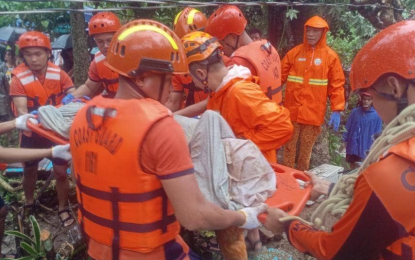

7 dead, 431K families affected as 'Kristine' batters most of PH
By Priam Nepomuceno October 24, 2024, 10:05 am KRISTINE'S FURY. Philippine Coast Guard rescuers assist in the retrieval of the bodies of two residents after a landslide in Sitio Libas, Barangay Maguiton, Guinobatan, Albay on Wednesday (Oct. 23, 2024). The NDRRMC reported that Severe Tropical Storm Kristine (Trami) has so far left seven people dead and has affected over 431,000 families. (Photo courtesy of PCG)
MANILA – Seven persons were reported dead as Severe Tropical Storm Kristine (international name: Trami) battered most of Luzon and parts of the Visayas, the National Disaster Risk Reduction and Management Council (NDRRMC) said Thursday.
In its latest situation report, the disaster response body said the deaths include six from Bicol and one in Calabarzon.
Four persons were reported injured in Bicol while another seven persons were reported missing -- five in Bicol, one in Calabarzon, and one in Ilocos region.
These reports of casualties are still undergoing validation, the NDRRMC added.
Meanwhile, a total of 431,738 families or 2,077,643 persons from 2,124 barangays in Ilocos Region, Cagayan Valley, Calabarzon, Mimaropa, Bicol, Western Visayas, Central Visayas, Eastern Visayas, Zamboanga Peninsula, Caraga, Bangsamoro Autonomous Region in Muslim Mindanao (BARMM), and the Cordillera Administrative Region (CAR) were affected by the weather disturbance.
As of this time, 43,463 families, which is equivalent to 163,184 individuals, are being sheltered in 4,567 evacuation centers while another 8,003 families or 32,877 persons are being aided outside.
Inclement weather caused by Kristine also affected the operations of 86 ports in nine regions.
Meanwhile, stranded passengers were placed at 5,980 persons along with 1,351 rolling cargoes, 106 vessels, and 12 motor bancas in various ports in Calabarzon, Mimaropa, Bicol, Western Visayas, Central Visayas and Eastern Visayas.
Around 1,007 houses were also reported damaged in seven regions. (PNA)